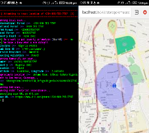

Infoga is an abbreviation for Information Gathering and is a tool for gathering information on victim's.
Sim Infoga is a tool that gathers information based on sim and it country,
which was build with the help of python programming language.
apt update && apt upgrade
apt install git
git clone https://www.github.com/dhfhacker/SIM_Infoga.git
cd SIM_Infoga
python3 Infoga.py -c [Country_Code] -p [Phone_Number]
Useage: python3 Infoga.py [OPTION...]
------------
| OPTIONS
|----------
| -u [Update Script] | Update Infoga Script for Better Security
| -a [About Tool & Author] | About our Tool and Contact us for more Question
| -c [Victim's Country Code] | Specify Victim's Country Code WithOut "+" .eg 234
| -p [Victim's Phone Number] | Specify Victim's Phone Number'
| EXAMPLES
|----------
| python3 Infoga.py -u | Script Updating
| python3 Infoga.py -a DHF | About Tool & Author
| python3 Infoga.py -c 234 -p 7000000000 | Specify victim's Country Code & Phone Number
